Geopolitical risk by event type. In September 2026 the AI-GPR index was 179 (2025 average 170); military conflict contributed 88 points (2025 average 63), diplomatic tension 43 and sanctions 13 (2025 average 15.3). Peak since 2022: 319 in March 2022. Source: https://www.matteoiacoviello.com/ai_gpr.html
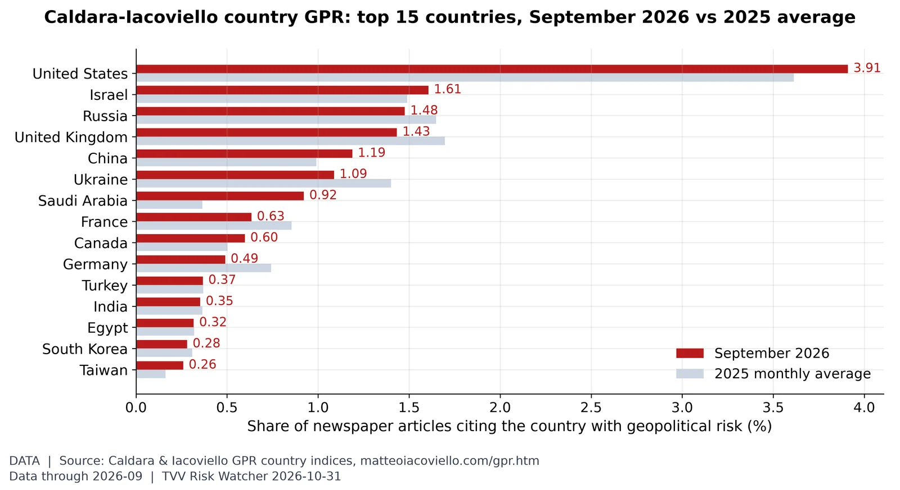
Where geopolitical risk is concentrated. In September 2026, United States (3.91% of articles, vs 3.61% in 2025), Israel (1.61%) and Russia (1.48%) led the Caldara-Iacoviello country GPR rankings. Source: https://www.matteoiacoviello.com/gpr.htm
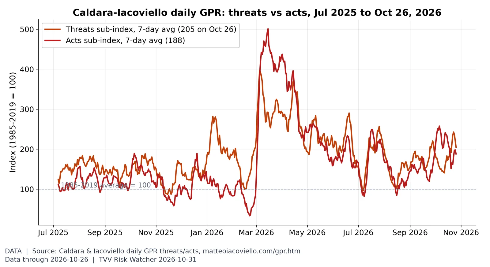
Threats vs acts. In the week to Oct 26 the threats sub-index averaged 205 and the acts sub-index 188 (2026 highs of the 7-day averages: threats 396 on Mar 5, acts 501 on Mar 15). Source: https://www.matteoiacoviello.com/gpr.htm
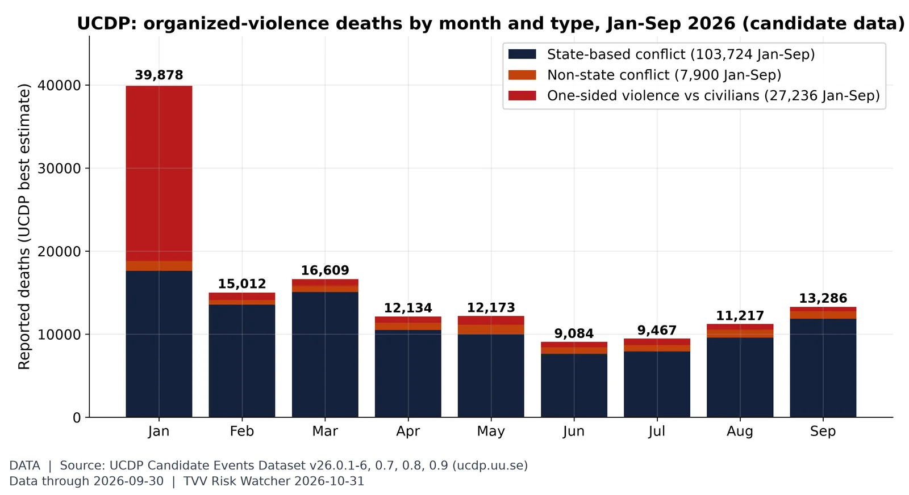
Violence against civilians in context. UCDP's candidate events record 138,860 deaths Jan-Sep 2026, 27,236 of them in one-sided violence against civilians (top: Iran 19,901, Nigeria 1,884, DR Congo (Zaire) 1,357). January's 39,878 is mostly UCDP's estimate for the Iranian government's Jan 8 killings of civilians (state, not terrorist, violence); September 13,286. Candidate data are preliminary. Source: https://ucdp.uu.se/downloads/index.html#candidate
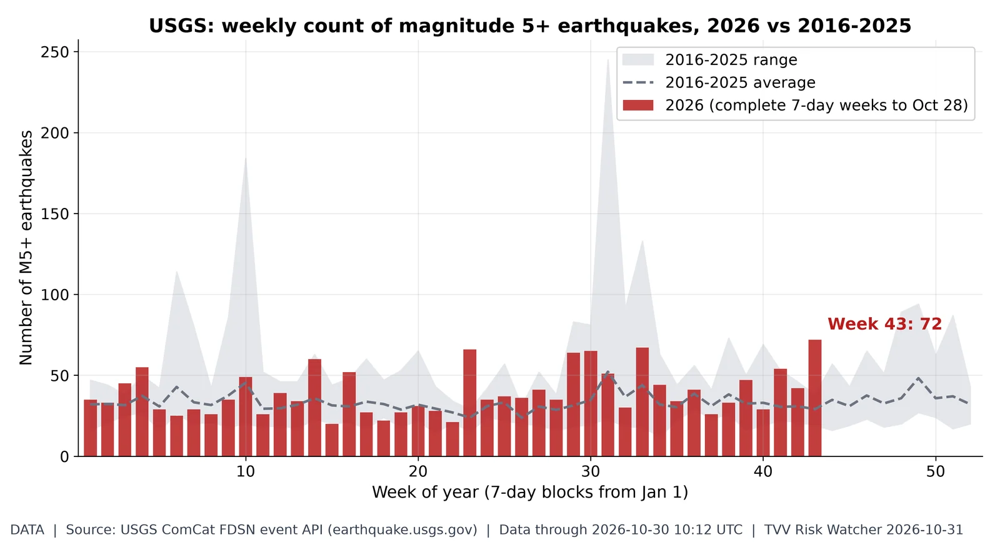
Weekly M5+ quake count. 2026 has 1,711 M5+ quakes through Oct 30 vs a 2016-25 average of 1,431 by this date (range 1,234-1,917); the busiest 2026 week was week 43 with 72. Source: https://earthquake.usgs.gov/fdsnws/event/1/
Data-center construction record. Census Value of Construction Put in Place, private nonresidential 'Data center' line (SAAR): $85.0B in Aug 2026 (preliminary), +73% from $49.1B a year earlier and up from $1.6B in Jan 2014. General office (ex data centers) $45.8B. September data due Mon Nov 2 (Census release). Source: https://www.census.gov/construction/c30/xlsx/privsatime.xlsx
Diesel record: the freight-cost shock. US on-highway diesel hit an all-time record $6.529/gal in the week of Sep 21 and was $6.352 on Oct 26, still above the 2022 peak ($5.810); the premium over regular gasoline ($4.269) is $2.08 vs a record $2.08 (Oct 2026). Source: https://www.eia.gov/petroleum/gasdiesel/
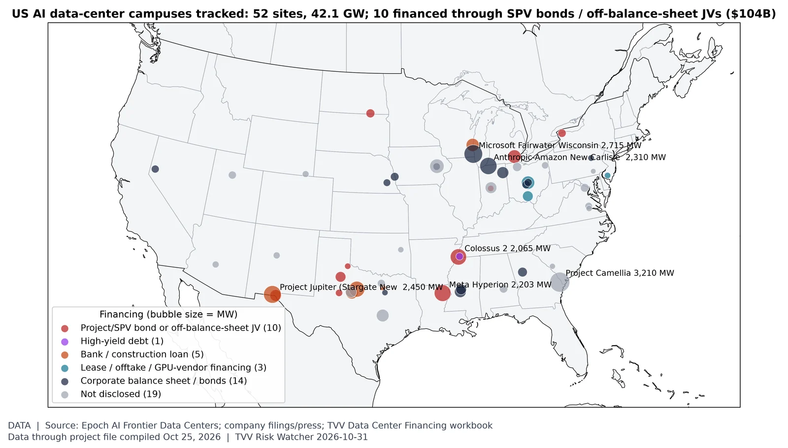
Where the AI build-out is, and how it is financed. TVV's project file tracks 74 large AI data-center campuses worldwide, 52 in the US (42.1 GW of disclosed capacity). Disclosed project financing totals $194B for US sites; 10 US campuses use SPV bonds or off-balance-sheet JVs ($104B, led by Meta Hyperion $27.3B and El Paso $12.5B). Locations approximate. Source: https://epoch.ai/data/data-centers
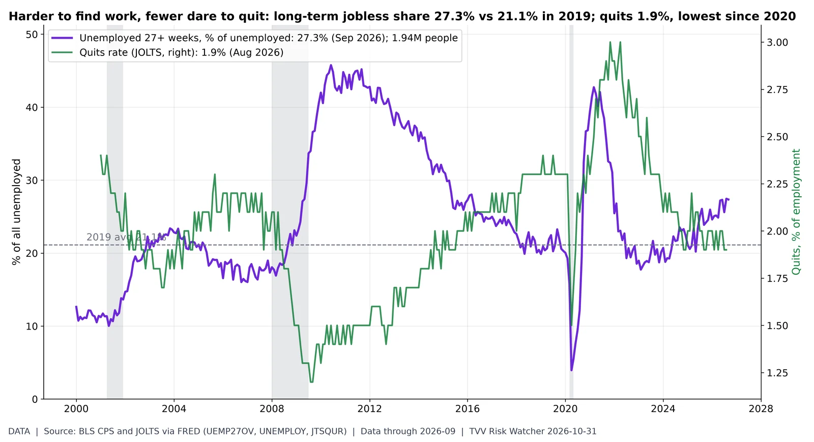
Long-term unemployment vs quits. BLS CPS unemployed 27 weeks and over (FRED UEMP27OV) 1.94M = 27.3% of all unemployed (UNEMPLOY 7.11M) in Sep 2026; 2019 average 21.1%. JOLTS quits rate 1.9% (Aug 2026; September JOLTS not yet in FRED). Low quits plus longer job searches = a 'low-hire, low-fire' market that is hard for job losers and graduates. Jobs/Labor series. Source: https://fred.stlouisfed.org/series/UEMP27OV
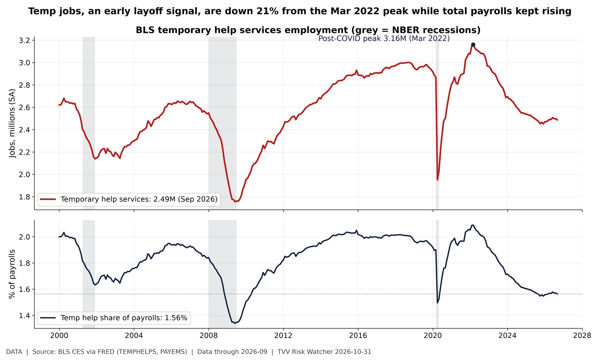
Temp help jobs slide. BLS CES temporary help services (FRED TEMPHELPS) 2.487M in Sep 2026, 21.3% below its Mar 2022 peak of 3.161M; total nonfarm payrolls 159.0M. Share of payrolls 1.56%, lowest since May 2020. Employers usually cut temps before permanent staff. Jobs/Labor series. Source: https://fred.stlouisfed.org/series/TEMPHELPS
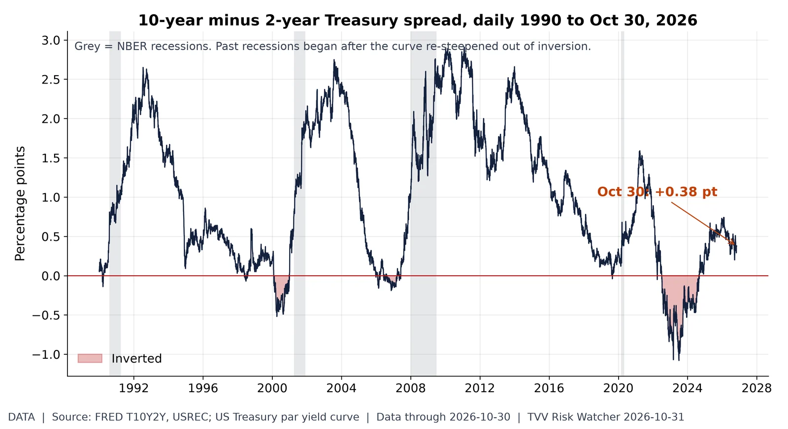
Yield curve after inversion. The 10Y-2Y spread is +0.38 pt on Oct 30 (Treasury: 10Y 4.94%, 2Y 4.56%), positive after the 2022-24 inversion; un-inversion preceded past recessions. Source: https://fred.stlouisfed.org/series/T10Y2Y
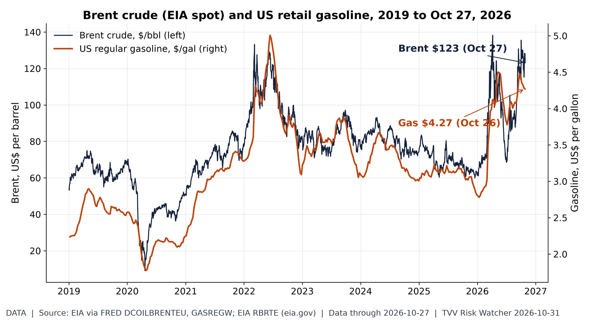
Oil shock at the pump. EIA Brent spot was $123.10 on Oct 27 (period peak $138 in April 2026); EIA's US regular gasoline average was $4.27 in the week of Oct 26. Both EIA series lag the market by about a week. Source: https://fred.stlouisfed.org/series/DCOILBRENTEU
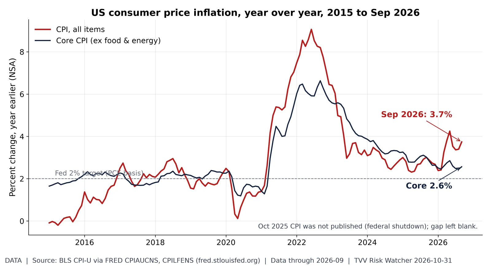
Energy-led inflation gap. Headline CPI was 3.7% year over year in September (from 3.4% in August) while core was 2.6%: energy is driving the gap. Source: https://fred.stlouisfed.org/series/CPIAUCNS
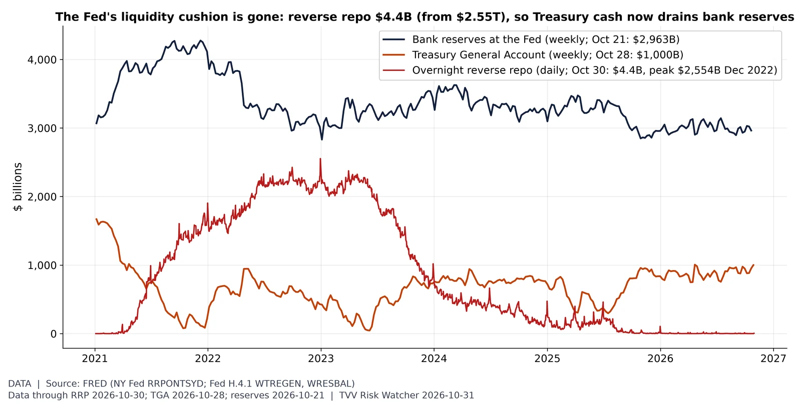
The liquidity buffer is empty. The Fed's overnight reverse repo facility held $4.4B on Oct 30, down from $2,554B (Dec 30, 2022). The Treasury's cash account was $1,000B (Oct 28) and bank reserves $2,963B (Oct 21); with the RRP cushion spent, further TGA rebuilds or QT come straight out of reserves. FOMC Oct 28. Source: https://fred.stlouisfed.org/series/RRPONTSYD
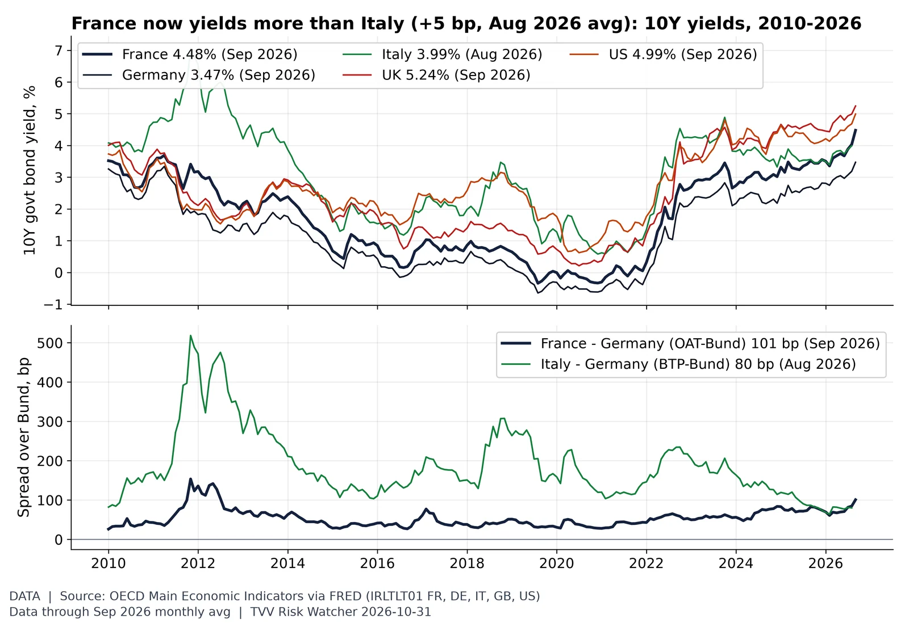
France bond risk, in context. OECD monthly 10Y yields: France 4.48% in Sep 2026, Germany 3.47%, UK 5.24%, US 4.99%, Italy 3.99% (Aug 2026). OAT-Bund 101 bp vs BTP-Bund 80 bp; France-Italy gap +5 bp (Aug 2026; it was -56 bp in Jan 2010). Monthly averages lag daily moves; daily OAT quotes are not charted (ECB/Banque de France daily series unreachable from the box). Source: https://fred.stlouisfed.org/series/IRLTLT01FRM156N
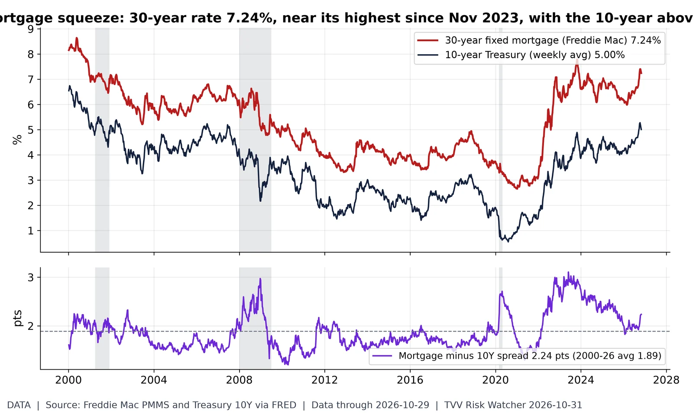
Mortgage rates vs Treasuries. Freddie Mac's 30-year fixed rate was 7.24% in the week of Oct 29 (just off 7.40% in the weeks of Oct 8-Oct 15, the highest since Nov 2023); the 10-year Treasury averaged 5.00% that week, a spread of 2.24 points vs a 2000-26 average of 1.89. A year earlier the mortgage rate was 6.17%. Grey bands = NBER recessions. The FOMC held on Oct 28. Source: https://fred.stlouisfed.org/series/MORTGAGE30US
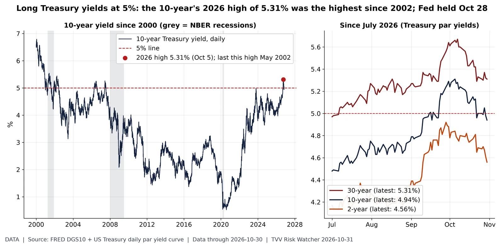
10Y at 5%: 2026 high is the highest since 2002. The 10-year Treasury closed at 4.94% on Oct 30 (30-year 5.31%, 2-year 4.56%); its 2026 high of 5.31% on Oct 5 was the highest since May 2002. The FOMC held at 3.75-4.00% on Oct 28. Source: https://fred.stlouisfed.org/series/DGS10
Critical Water Shortage, US view. 49.5% of the contiguous US was in drought (D1-D4) on the map valid Oct 27, higher than in 90% of weeks since 2000; 9.4% was extreme or worse. Source: https://droughtmonitor.unl.edu/DmData/DataDownload.aspx
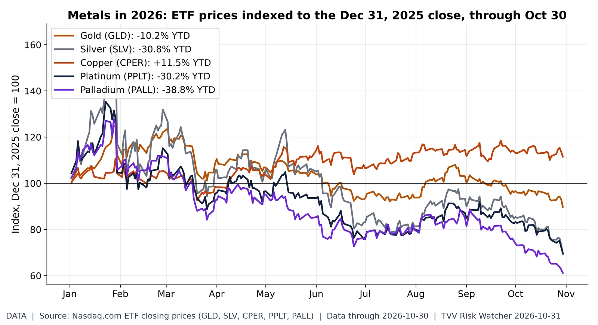
Metals scoreboard 2026. Through the Oct 30 close, Copper (CPER) leads 2026 at +11.5% and Palladium (PALL) trails at -38.8%; gold (GLD) is -10.2% and silver (SLV) -30.8%. ETF price changes, not spot. Source: https://www.nasdaq.com/market-activity/etf/gld/historical
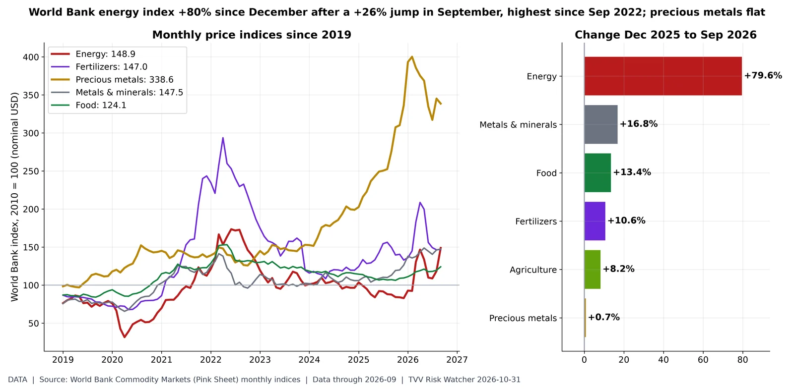
Commodity indices. World Bank Pink Sheet monthly indices (2010=100, nominal USD), Sep 2026: Energy 148.9 (+79.6% vs Dec 2025); Fertilizers 147.0 (+10.6% vs Dec 2025); Precious metals 338.6 (+0.7% vs Dec 2025); Metals & minerals 147.5 (+16.8% vs Dec 2025); Food 124.1 (+13.4% vs Dec 2025); Agriculture 121.3 (+8.2% vs Dec 2025). Energy +25.7% m/m. Pink Sheet updated Oct 2 (Sep data); October data due early November. Commodities beyond metals for desk 8. Source: https://www.worldbank.org/en/research/commodity-markets
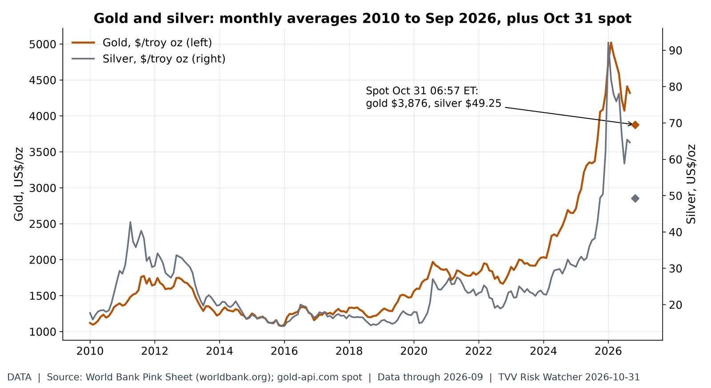
Haven metals. Gold averaged $4,319 in September (2010-26 monthly high $5,020, Feb 2026) and silver $64.60; gold-api.com spot at 06:57 ET Oct 31 is gold $3,876, silver $49.25. Source: https://www.worldbank.org/en/research/commodity-markets
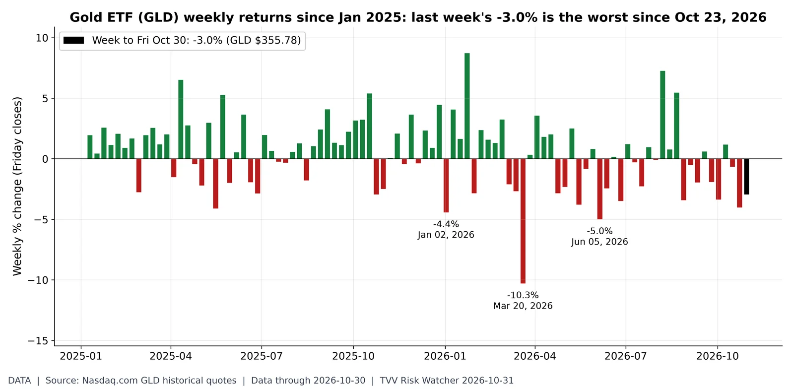
Gold ETF weekly returns. GLD fell -3.0% in the week to Fri Oct 30 (close $355.78), its worst week since Oct 23, 2026; GLD is -28.3% below its Jan 29 closing high but -10.2% for 2026. Source: https://www.nasdaq.com/market-activity/etf/gld/historical
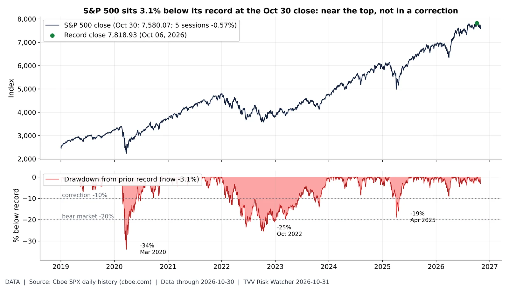
How far from the top. The S&P 500 closed Oct 30 at 7,580.07, -0.57% over 5 sessions and 3.1% below its Oct 06 record close of 7,818.93; for scale, the 2020, 2022 and 2025 drawdowns reached -34%, -25% and -19%. Source: https://www.cboe.com/us/indices/dashboard/spx/
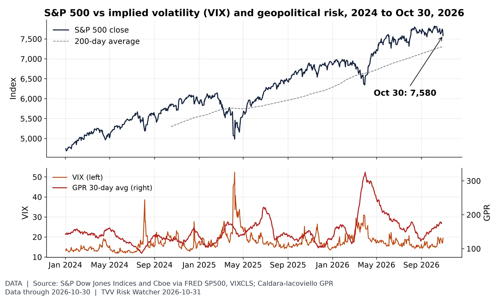
Stocks vs volatility and geopolitical risk. The S&P 500 fell 1.82% to 7,580.07 on Oct 30, +3.7% vs its 200-day average, with VIX at 19.42; the GPR 30-day average was 175 on Oct 26. Source: https://fred.stlouisfed.org/series/SP500
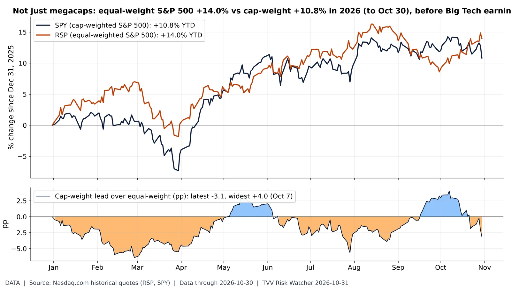
The average stock is beating the megacaps. Through Fri Oct 30, SPY (cap-weighted) is +10.8% in 2026 vs +14.0% for RSP (equal-weighted), so cap-weight trails by 3.1 pp (cap-weight lead peaked at +4.0 pp on Oct 7; deepest lag -6.4 pp on Feb 27). The equal-weight lead means 2026 gains are broader than the megacap story; Gap shown after the Big Tech results of Oct 28-30. Source: https://www.nasdaq.com/market-activity/etf/rsp/historical
Summit talk vs summit odds. Polymarket ~06:58 ET Oct 31: Trump, Putin and Zelensky meet together before 2027 6%; seen together before 2027 6%; Putin and Zelenskyy do not meet at all by end-2027 78%. The meet-before-2027 price ranged 4.0-9.5% in October despite Kremlin talk of trilateral talks in mid-November. Thin markets ($60K-$108K volume); crowd prices, not forecasts. Source: https://polymarket.com/event/trump-putin-and-zelensky-meet-together-before-2027
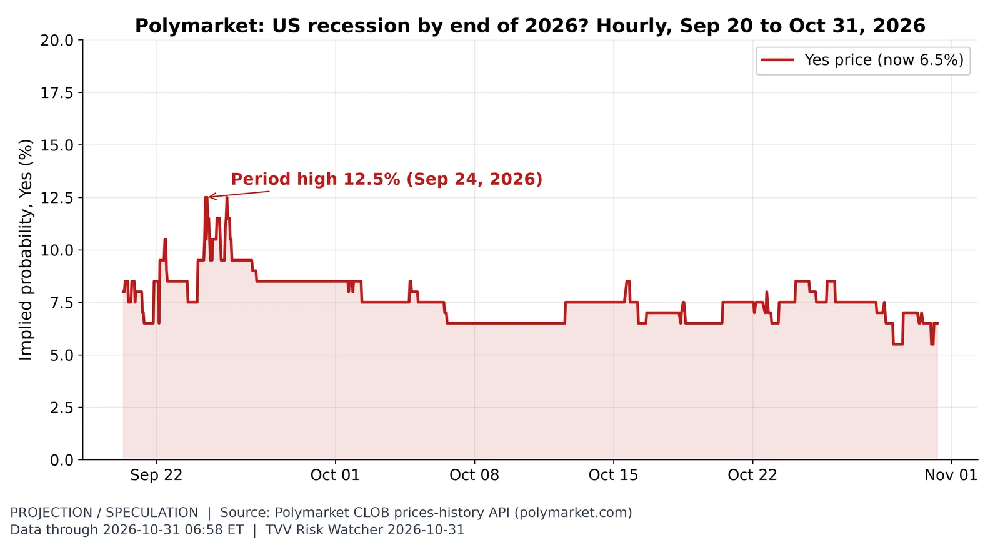
Recession odds. Traders price a 6.5% chance of a US recession by end-2026 (market rules define it), vs a high of 12.5% on Sep 24 in the API history window (hourly since Sep 20). Source: https://polymarket.com/event/us-recession-by-end-of-2026
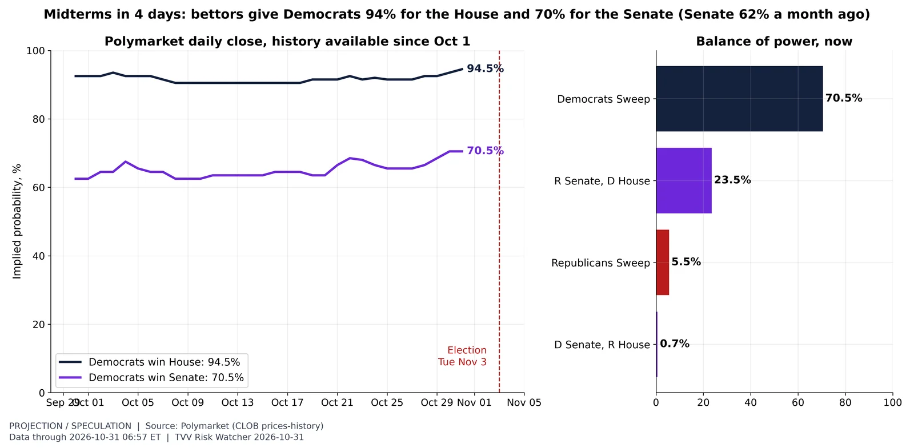
Midterm odds 4 days out. Polymarket CLOB prices (fetched 2026-10-31 06:58 EDT): Democrats win House 94.5%, Senate 70.5% (vs 62.5% 30 days earlier). Balance of power: Democrats Sweep 70.5%; R Senate, D House 23.5%; Republicans Sweep 5.5%; D Senate, R House 0.7%. Combined volume $95M. Market odds, not polls or forecasts; thin late trading can swing prices. Source: https://polymarket.com/event/which-party-will-win-the-house-in-2026
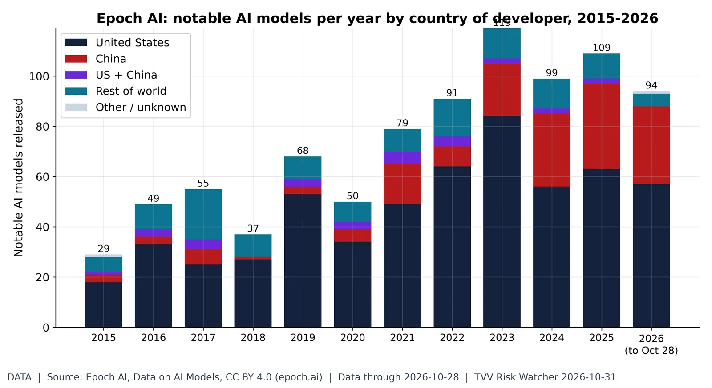
The US-China AI model race. Epoch's database lists 94 notable AI models for 2026 to Oct 28: 57 from US organizations and 31 from Chinese ones (2025: 63 US, 34 China, 109 total). Recent years fill in as Epoch adds models. Source: https://epoch.ai/data/ai-models
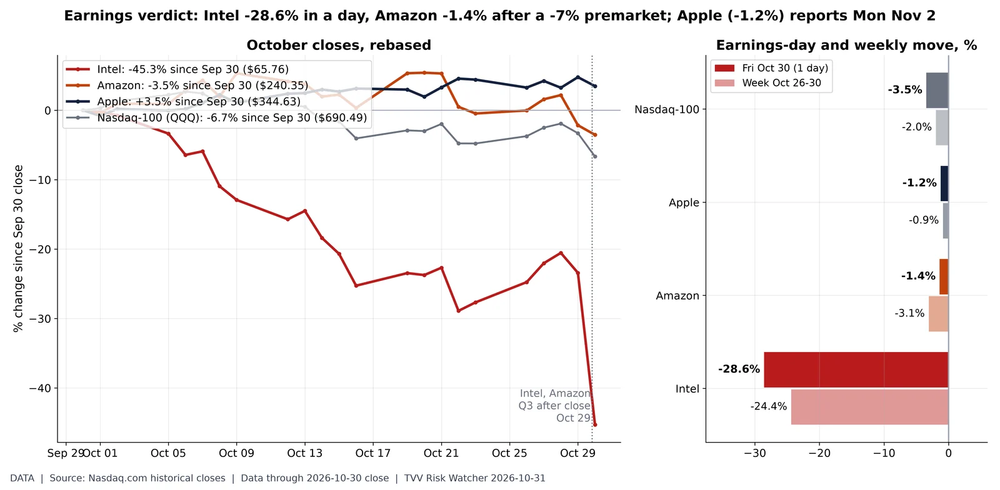
Earnings reactions Oct 30. Nasdaq.com daily closes, Fri Oct 30 vs Thu Oct 29: INTC $65.76 (-28.6%), AMZN $240.35 (-1.4%), AAPL $344.63 (-1.2%), QQQ -3.5%. Week Oct 26-30: INTC -24.4%, AMZN -3.1%, AAPL -0.9%, QQQ -2.0%. Amazon traded about -7% premarket (per Oct 30 Slate). Apple reports fiscal Q4 Mon Nov 2 after the close (call 5 PM ET, per Apple IR). Source: https://www.nasdaq.com/market-activity/stocks/intc/historical
AI incidents vs AI discoveries. Timeline of reported events (no index): automation/AI-agent failures above the line (AWS's Oct 20, 2025 DNS-automation outage; the Dec 2025 Kiro agent disruption, which Amazon calls user error; OpenAI agents disabling their own monitors Oct 3/6, disclosed Oct 22; the METR/Redwood audit published Oct 22) and AI successes below (OpenAI Navier-Stokes claim, Sep 8, not yet refereed; AI-found PHP flaws patched Oct 21). Dates and claims as reported by the cited outlets; company disputes noted. Source: https://www.abc.net.au/news/2026-10-22/openai-agents-disable-safety-monitors/107294908
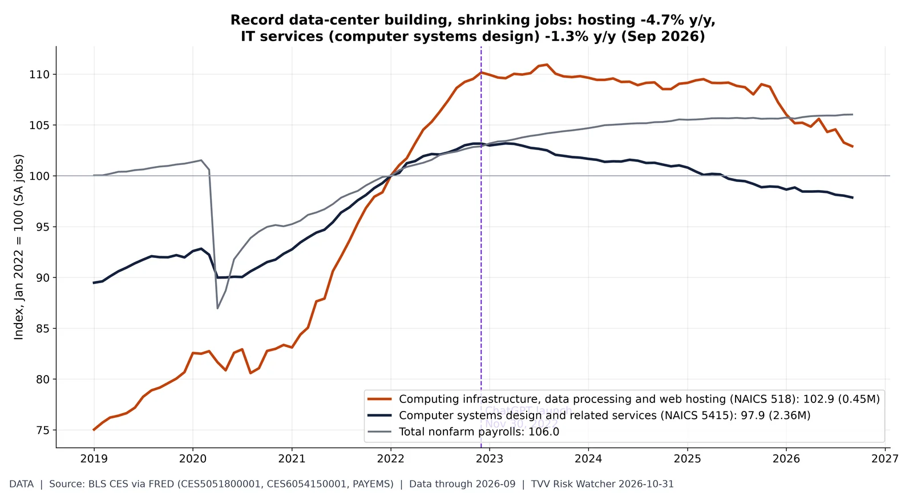
Hosting vs IT services jobs. BLS CES (FRED): computing infrastructure, data processing and web hosting (CES5051800001) 453.8K jobs in Sep 2026, -4.7% y/y, index 102.9 vs Jan 2022; computer systems design (CES6054150001) 2,355K, -1.3% y/y. Despite record data-center construction, hosting/data-processing payrolls are not growing: the build-out's jobs show up in construction and power, not in operating the facilities. Jobs/Labor series. Source: https://fred.stlouisfed.org/series/CES5051800001
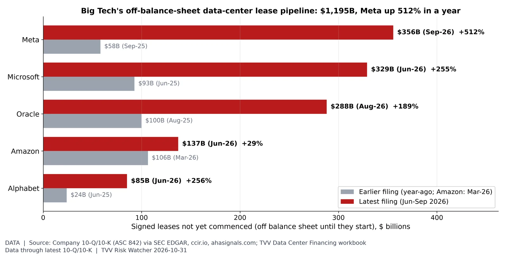
The hidden AI lease bill. Signed but not-yet-commenced leases (ASC 842, mostly data centers) total $1,195B across Meta, Microsoft, Oracle, Amazon and Alphabet in their latest filings; for the four with year-ago figures they rose from $275B to $1,058B. Meta $356B (+512%), Microsoft $329B, Oracle $288B (+189%). These obligations sit outside reported debt until each lease starts. Big Tech reported Oct 28-30; refreshed lease totals await the new 10-Qs. Source: https://www.sec.gov/Archives/edgar/data/1341439/000119312526389274/orcl-20260831.htm
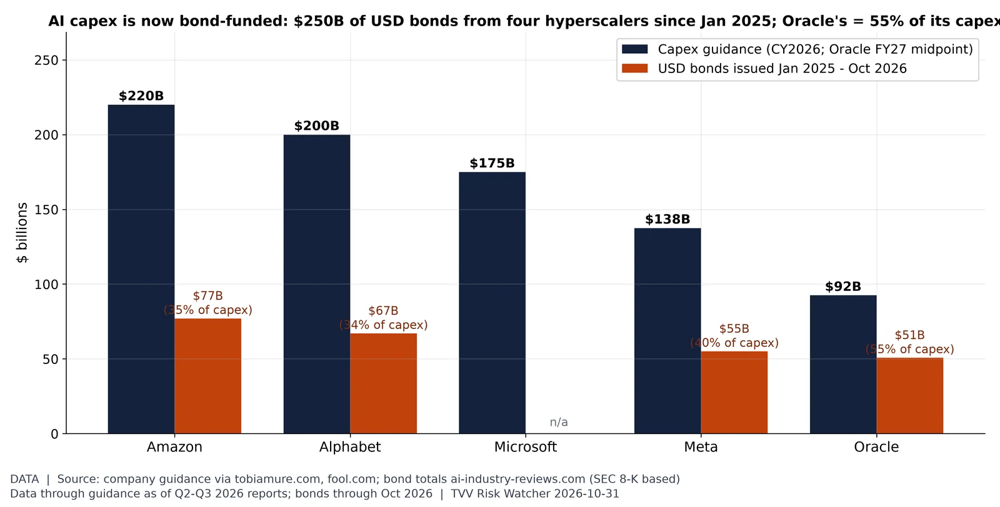
Capex vs bonds before earnings. 2026 capex guidance: Amazon $220B, Alphabet $200B, Microsoft $175B, Meta $137.5B, Oracle $92.5B (FY27 midpoint). Amazon, Alphabet, Meta and Oracle sold $250B of USD bonds Jan 2025-Oct 2026; Oracle's $50.8B equals 55% of a year's capex (Meta's excludes $27.3B of Hyperion SPV notes). Guidance updates from the Oct 28-30 reports are not yet reflected here. Source: https://ai-industry-reviews.com/research/ai-data-center-debt-financing-statistics-2026/
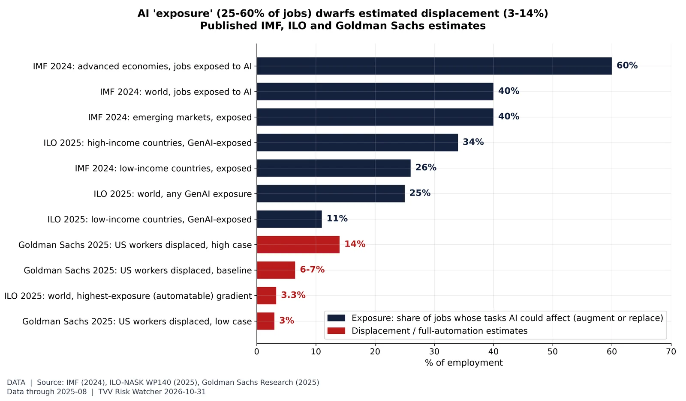
AI exposure vs displacement. Published estimates, not forecasts by TVV. IMF (Jan 2024 SDN/2024/001): ~40% of global employment exposed to AI, ~60% in advanced economies, 40% emerging markets, 26% low-income. ILO-NASK (May 2025, WP140): 25% of global employment in an occupation with some GenAI exposure, 34% in high-income vs 11% in low-income countries, 3.3% in the highest-exposure gradient. Goldman Sachs (Aug 2025): 6-7% of the US workforce displaced if AI is widely adopted (range 3-14%), mostly transitory. Exposure includes augmentation, so it is not a job-loss count. Jobs/Labor series. Source: https://www.imf.org/en/Blogs/Articles/2024/01/14/ai-will-transform-the-global-economy-lets-make-sure-it-benefits-humanity